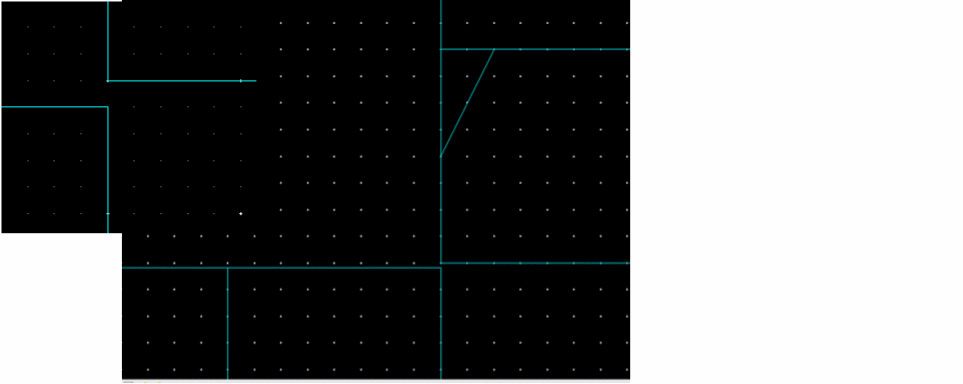
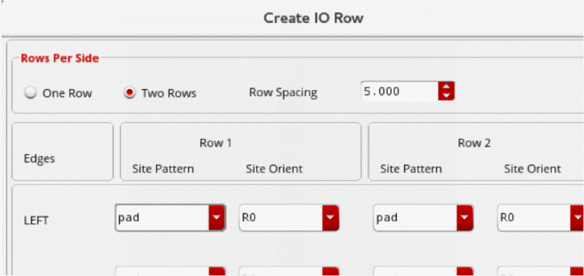
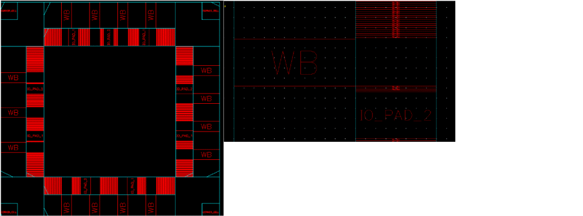

Abutment Issues During I/O Row Creation
During IO row creation, certain scenarios may lead to abutment issues.
-
Generating Two Rows Using the IO Planner
When two rows are created on each side of the top-level boundary, some rows are not abutted based on the PR dimensions and siteDefs as shown in the following figure.
Consider a scenario of IO pads with the following site definitions.scalarSiteDefs(
;(siteDefName type width height symInX symInY symInR0)
;(----------- ---- ----- ------ ------ ------ -------)
(corner pad 40.015 40.015 nil nil nil)
(it_pad_1 pad 1.0 40.015 nil nil nil)
(it_pad_2 pad 1.0 60 nil nil nil)
);scalarSiteDefs
)
;siteDefs
-
it_pad_1is the inner row (Row2). The inner row consists of pads, filler, and corner cells. -
it_pad_2is the outer row (Row1). The outer row consists of wirebond cells only. -
The PR boundary is set to
500 x 500.

0.1instead of1.0and re-create the rows. In case of adjacent rows, IO pads can be placed with a common PR boundary. -
-
Pad Placement with Two Rows
During IO planning, some gaps are identified between the IO pads when two rows are created on each side and wirebond is placed such that its height matches the exact height of row cells.

In this case, the wirebond cells in the outer row are exactly same as on the boundary of the inner row. Therefore, the tool does not place fillers and leaves empty spaces.
To place fillers and to complete the row, increase the width of the site definition for the outer row and manually add some spaces between the two rows to ensure a DRC-correct design.
Related Topics
Return to top